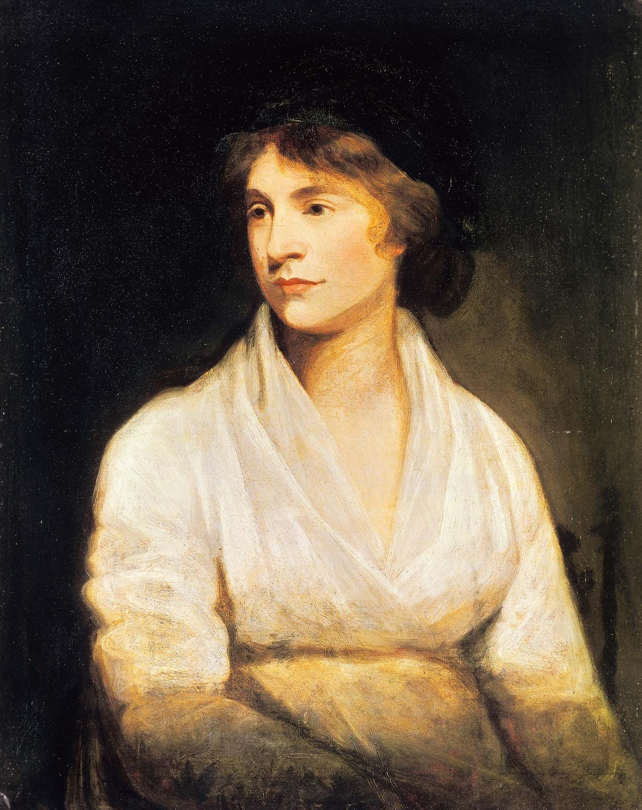
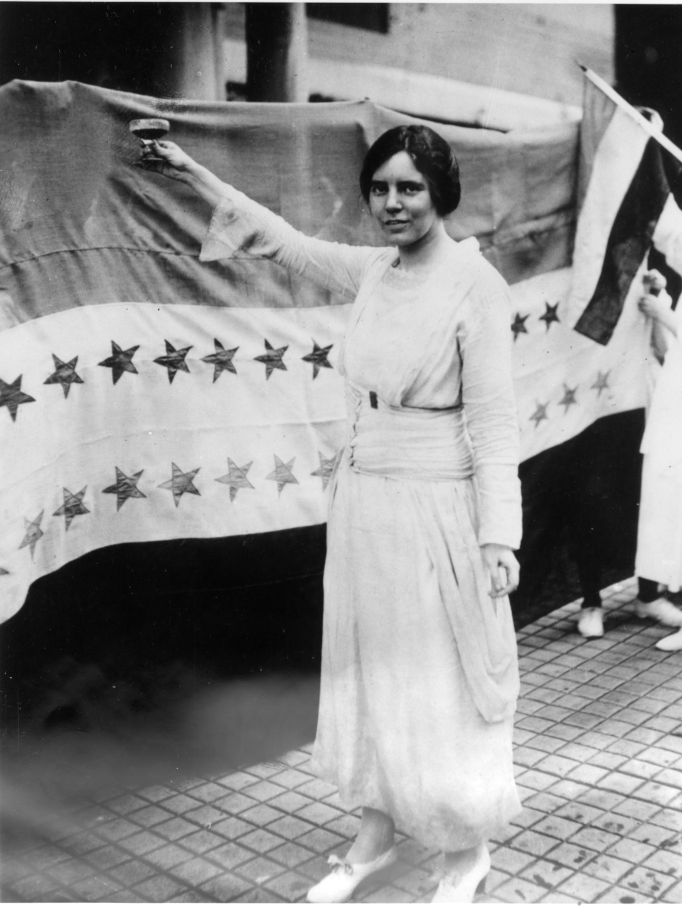
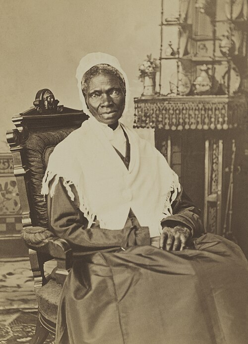
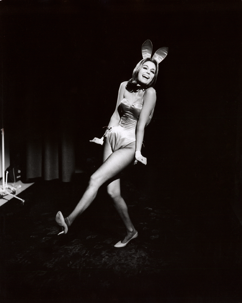
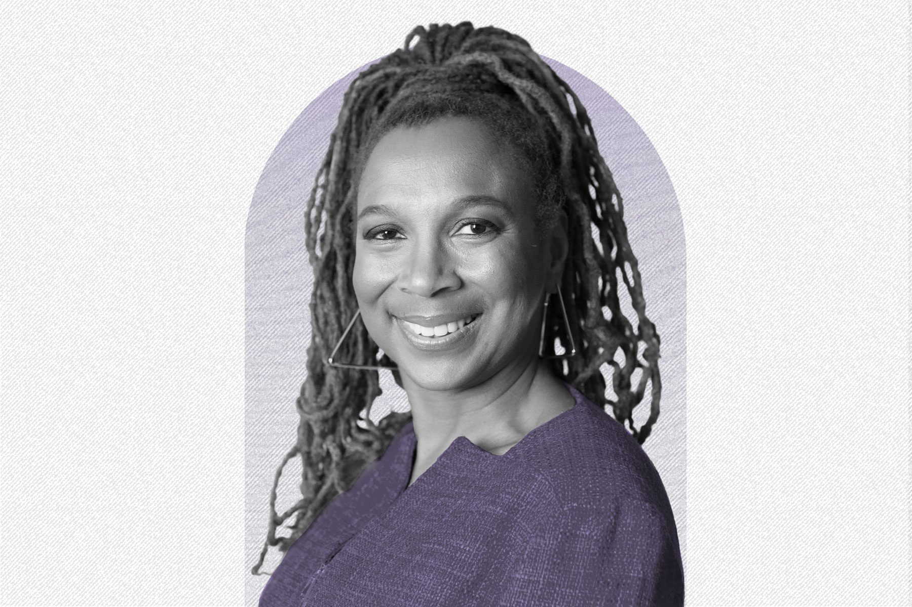
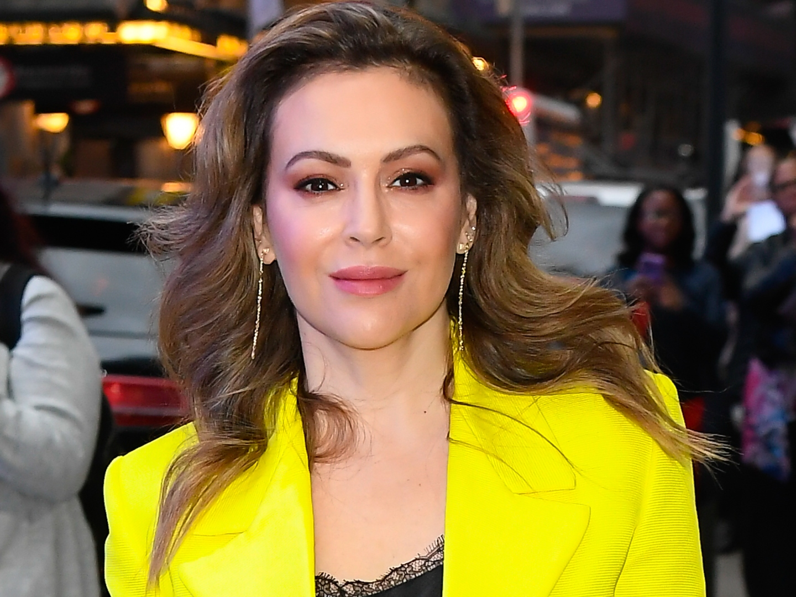

Prominent Feminists Throughout History
Throughout the years the goals of the feminist movement have shifted consdiderably. In the First Wave they mostly advocated for equal rights and womens suffrage, while in the Second Wave they advocated for womens autonomy. In Third Wave they focused on intersectionality. Exploring that women of different backgrounds have very different rleationships with feminism. Lastly, in Fourth wave, which is still going on, they're focusing on women being politically active and advocating for themselves when it comes to harassment and abuse. "The flip side of this individualistic model of guilt and blame is that race,gender, and class oppression are actually not oppression at all but merely thesum of individual failings on the part of people of color, women, and peopleliving in poverty, who lack the right stuff to compete successfully with whites, men, and others who know how to make something of themselves."
First Wave
Molly Wollstonecraft

Mary Wollstonecraft was one of the earliest feminists. She was a very passionate advocate for education and social equality for women in a time where women had very little of either. Most promintently however, she outlined her ideas of feminism in A Vindication of the Rights of Woman.
Alice Paul

Alice paul was a very prominent womens suffrage leader. She also was the one to first propose the Equal Rights Amendment. She organized marches and rallies promoting womens suffrage during the early twentieth century.
Sojourner Truth

Sojourner Truth was an activist for civil rights, as well as womens rights. She was a big activist for improving the rights of black women who are even more oppressed than white women.
Second Wave
Gloria Steinem

Gloria Steinem wrote and advocated for women having the choice to work or take care of the home. This challenged societies norms of women always being caretakers at home.
Third Wave
Kimberlé Crenshaw

Kimberlé Crenshaw coined the term for intersectionality. She explored how race and other backgrounds play a significant role in how women are treated. Intersectionality explores that each individual is different and has their own relationship with feminism.
Fourth Wave
Alyssa Milano

Alyssa Milano really isnt a feminist in the traditional sense, however I included her on this list because she sparked one of the largest feminist movements, #meToo. This is a huge movement where women all over the world were calling out abusers for what they did.